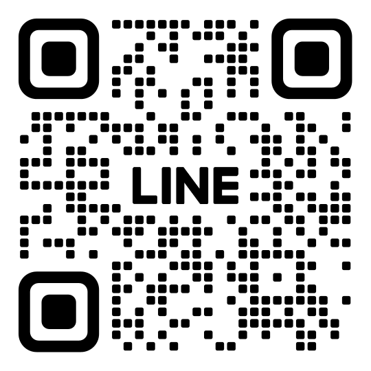

町の便利屋さんのような存在
茨城県城里町を中心に活動する、地域密着型サポートサービスです。家や職場へ伺い、落ち着いて相談できます。
お助けAI城里センター
城里町のデジタル相談窓口
私たちは、AI活用を代行することで、暮らしにゆとりと喜びを届け、地域と共に歩み続けます。
地域密着・訪問中心
――相談だけでいい、訪問型サポート――
「よくわからないので、誰かに聞きたい」そんな時に、家や職場へ伺って一緒に考えるサービスです。 パソコン・スマホ、書類や文章づくり、仕事の整理や段取りなど、話しながら形にしていきます。

茨城県城里町を中心に活動する、地域密着型サポートサービスです。家や職場へ伺い、落ち着いて相談できます。
文章・書類づくり、仕事の整理・段取り、進め方が分からないことなどを、話しながら一緒に解決します。
「何をどう言えばいいか分からない」でも大丈夫。困りごとを言葉にするところからお手伝いします。

家・事務所・作業場などへ伺います。出向く必要はありません。顔を見て、落ち着いて話せます。
専門用語は極力使いません。ゆっくりで大丈夫。分かる言葉で、一緒に進めます。
お客様がAIを使うことはありません。触る必要も覚える必要もなく、こちらが形にします。
目指している存在
「いなくなるとちょっと困る」
「気軽に相談できる」
「来てくれるのが少し楽しみになる」
城里町で、静かに頼られ続ける存在

2,200円（税込）〜
内容と作業時間によって変わります。
始める前に「いくらになるか」をお伝えしてから進めます。
| 項目 | 内容 | 料金（税込） |
|---|---|---|
| 相談 | 訪問相談（30分） | 無料 |
| 相談＋解決 | その場で解決できる場合 | 2,200円 |
| チラシ作成サポート | A4カラー片面（100枚印刷付き） | 16,500円 |
| 補助金申請サポート（伴走型） | 申請の整理〜提出まで、いっしょに進めます | 着手金 11,000円 成功報酬：成功報酬（下限¥33,000） ／ 採択額の5％ |
| 個人向けデジタル安心見守り | 月1回の訪問相談（30分）、LINEでのAI活用相談（無制限） | 月額 ¥3,300 |
上記の料金表にないご依頼も対応可能です。書類・文章の作成や整理、手続きの段取り、 スマホ・パソコンの困りごとなど、内容をお聞きしたうえで「対応できるか」「目安の費用」を事前にご案内します。
はじめての方が気になりやすい点を、先にまとめました。
A. そう感じる方はとても多いです。専門的なことは一切知らなくて大丈夫です。分からないところを、分からないまま一緒に確認していきます。
A. はい、大丈夫です。むしろ「ゆっくり説明してほしい」という方を想定しています。紙に書いたり、実際の画面を一緒に見ながら進めます。
A. 調べられる方は、それで十分だと思います。ただ、「何をどう調べたらいいか分からない」という場合は、少しお手伝いできるかもしれません。
A. とても大切な感覚です。入れてはいけない情報、気をつける点は最初にきちんとお話しします。無理にAIを使うことはありません。
A. 最初は、そこが一番分かりにくいと思います。「今、何に困っているか」を一緒に整理するところから始めます。はっきりしていなくても大丈夫です。
A. はい、あります。ですので、AIの答えをそのまま使うことはしません。一緒に確認しながら、使える部分だけを選びます。
A. いいえ、年齢は関係ありません。スマホやデジタルに不安がある方ほど、ゆっくり使っていただけます。
A. その点も大切ですよね。作業に入る前に、内容と費用をきちんとお伝えします。相談だけで終わっても問題ありません。
A. 表に出にくいだけで、実は困っている方は多いです。小さな「分からない」を、気軽に話せる場所を目指しています。
A. 最初から完璧を目指しません。うまくいかない場合は、理由を一緒に整理して、次を考えます。無理に進めることはありません。
友だち追加して、そのままメッセージでお問い合わせできます。
 友だち追加して問い合わせLINEでのお問い合わせがおすすめです。
※訪問日時・場所・内容を簡単にお伝えいただけるとスムーズです。
メールやLINEに貼り付けてお使いください。